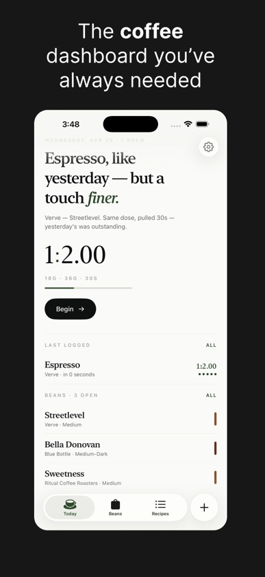
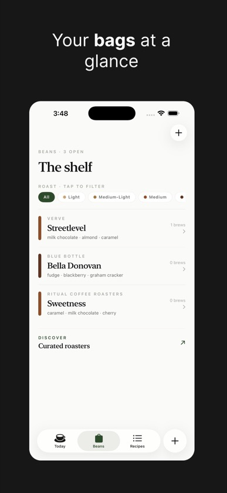
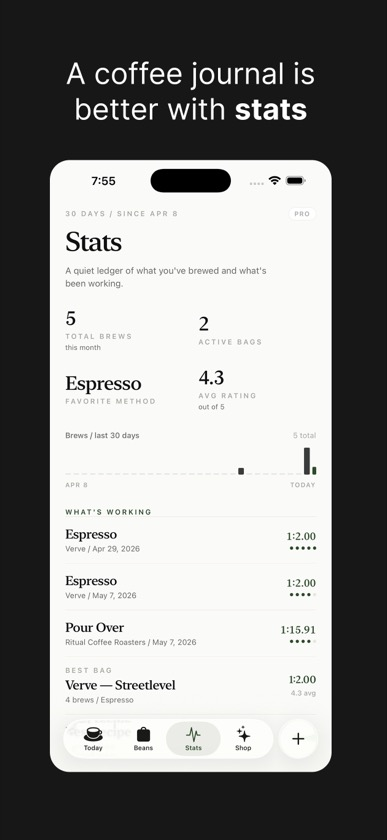
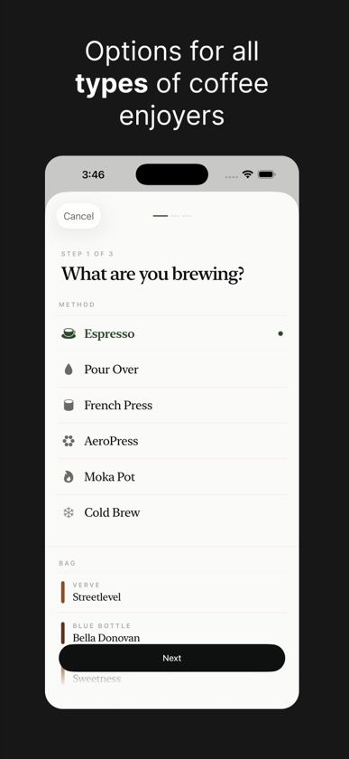
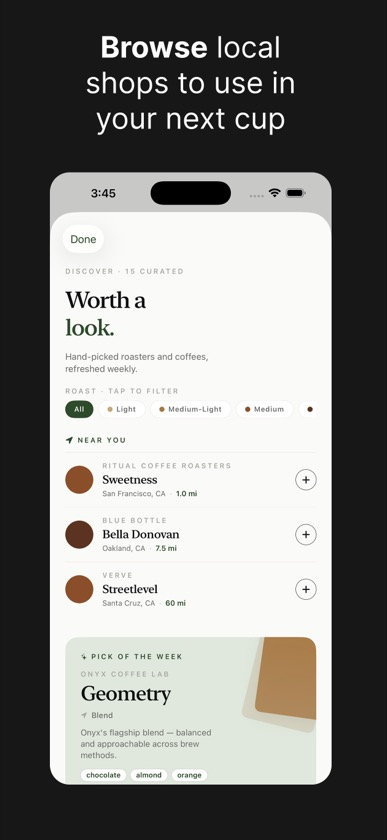
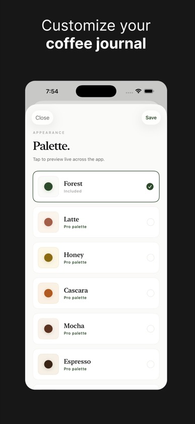

Log a brew in 20 seconds
Method, ratio, rating. Every value prefilled from your last shot — change only what you changed.
For the coffee you brew at home
Log a bag, log a shot, repeat what worked. No streaks. No social. No scoring algorithm.






What it does
Method, ratio, rating. Every value prefilled from your last shot — change only what you changed.
Origin, roast date, tasting notes, process. Linked to every shot you pull from the bag.
Tap a recent shot to log it again with the same dose, yield, time, and grind. Then nudge what you want to change.
Every dial on one screen. "Was 18 g" hints under fields you've changed.
For people who pull two shots a day
Most apps treat every entry like a new event. BeanBook prefills from your last shot, so the morning case is "tap, tap, save." The dial-in case is one screen with every dial in front of you.
BeanBook Pro
No subscription, ever. Pay once, own the app.
Free-tier caps lifted on bags, brews, and recipes.
30-day stats, dial-in summaries, and a curated palette set including one intentional dark theme.
Export and what comes next — included when they ship. No "premium plus" tier, ever.
Buy it once for everyone in your Family group.
Frequently asked
No. BeanBook is free to start, and Pro is a one-time purchase. We will not ship a subscription tier.
Not yet — your log lives on-device. iCloud sync is on the roadmap and will be free for everyone, not gated to Pro.
No. By design. We do not track or reward you for using the app every day.
Export is a planned Pro feature. Pro is one-time, so when it ships, you already own it.
BeanBook does not follow system dark mode. Pro includes one intentional dark palette for low-light brewing.
Get BeanBook